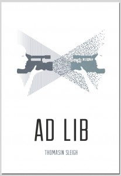

Canterbury's mandatory research deposit
BY ANTON ANGELO
From little things, big things grow: a personal reflection on mandatory deposit of research at the University of Canterbury, by Anton Angelo, Repository Manager at the University of Canterbury Library.
Last week I had an email discussion with the developer for our university research information system. My request is to make a file upload field required rather than optional. It, in the scheme of things, is a tiny change -- a couple of lines of code in an application that is going to be used by a few hundred people at a medium scale university.
In this case though, the change that this represents is huge. It is the bleeding edge of a change in the way that we understand intellectual property, and realigns the academy with its original intention of being a university.
Canterbury, like well over 200 other universities is adopting an ‘institutional mandate’ for depositing research into its Institutional Repository (IR; see Amanda Curnow’s clear description of what an IR is). We have purposefully kept the word ‘mandate’, as the implication of imposing something on scholars provoked the discussion we wanted -- positive engagement with what we were proposing. In reality the policy suggests that, in the absence of a good reason, every time a scholar publishes something it should be made freely available, and we provide a mechanism to do that with our IR. If a scholar wishes to opt out, they should feel free, but we’re curious to know why.
The small technical change we are making is that we’re requiring a copy of a research output submitted for the Performance-Based Research Fund (PBRF) process to be made available and openly accessible for the entire world, by uploading it to our IR. Currently, University of Canterbury scholars can volunteer to upload articles, and about 8% of our research output is put on the web and openly accessible. By making the file upload field required, we hope to see a tenfold increase in deposits.
As usual, there are historical precedents. The library of Alexandria had a mandate to take all the books arriving in the port, copy them, keep the originals, and return the copies. This way -- along with an excellent and aggressive collections budget -- the biggest library in the world was created.
Reaction to the suggestion of the policy in the community was interesting. The vast majority of faculty research committee meetings and private conversations ended with, “why are we not doing this already?”. It underscored the importance most researchers seem to place on having the widest possible audience for their work. There were exceptions to that, usually based on the culture of a particular academic discipline. For example: high-energy physicists (and others) already use a repository, ArXive. Why should they bother with another one?
I admit that uploading things to the IR is a faff for a lot of reasons. For example, because of the copyright most publishers take when they agree to print an article, scholars have to upload a version that is not the final published one. Academics are not great administrators, and can lose their manuscripts. As well as that it is an extra button to push, a file to hunt down on their hard drive, and then finally, troubling thoughts of “am I allowed to do this?” can overwhelm all but the most robustly legally minded. That last one -- what are you allowed to do with your own work? -- is a doozy. A scholar in the humanities admitted to me that on being offered the loan of a book his first thought was, “is he allowed to loan me that”? So entrenched are our anxieties on copyright that even the thing that lets libraries exist can be questioned by people who should know much, much better.
I make no apologies for the faff, for it is not faff of our making. We pay researchers to do research, and their research needs to be available for that most old-fashioned of reasons: the common good. You can quantify the good all you like in terms of innovation and product development and state corporate bottom line maximisation, but for me the qualitative argument comes first, and looms largest. It’s the right thing to do. So why is it hard? Wherefore the faff? Traditional academic publishers are on a bit of a losing wicket on this one. Made gigantic on the economic imperatives of globalisation and the efficiencies of the library ‘big deal’, they now have profits they are legally bound to protect for their shareholders. Faff is their stock-in-trade as a way of slowing down the opposition -- the IR.
Here are a few ways academic publishers try to slow down deposit into IRs.
- Most standard publisher-author agreements allow only an obscure version of the work to be added to the IR.
- They confuse the Open Access (OA) landscape by offering their own version of openly accessible articles, and play divide and conquer with their customers by making the academic pay a charge (often in the thousands of dollars) to publish under an open licence.
- Additionally, sometimes they offer their own ‘open’ licences, resulting in even greater uncertainty.
<li>They employ third parties to scour IRs to find material that could be non-compliant, and send threatening letters. Libraries, being excellent corporate citizens, respond to these by removing material.</li> <li>Knowing that old data is less sexy data, they require embargoes on the release of IR versions of articles, knowing that makes the IRs less useful.
- As well as this, at least one publisher requires embargoes on IR content only if the institution requires its scholars to submit their research outputs to its IR, an open recognition that IRs threaten publishers’ business model.
It may seem with all those tactics that there is a great conflict going on, but there really isn’t. It is not a war. The arbitrary exclusions and hoops above are the artefacts of a rapidly changing (and potentially failing) business model. New publishers, like PeerJ, Hindawi, and PLoS among many, many others, are simply starting with the assumption that the material will be OA, and they are a low or non-profit business, and can undercut the old guard entirely.
At Canterbury, we have made a tiny technical change. Instead of asking scholars to volunteer their work to be made openly accessible, we ask why they would not. That little thing signals a mighty change for the availability of new knowledge to the world.
Why Open Access is good for Kiwi businesses
BY ELIZABETH HERITAGE
The basic principle driving Open Access is that NZ taxpayer-funded research outputs -- including journal articles, conference proceedings and research data -- should be made openly available to Kiwi taxpayers, including businesses.
To celebrate Open Access Week 2014, we thought we’d share some thoughts on this topic from businesses and NGOs around Aotearoa.
Lillian Grace, CEO of Wiki New Zealand, says: “The value realised from publicly funded research will be hugely increased by making it open for others throughout our country to learn and apply findings to business, social, economic and environmental endeavours."
Oliver Hartwich, Executive Director of the NZ Initiative, says: "Taxpayers should have access to the results of research they are funding. This is why I support Creative Commons Aotearoa NZ in their campaign for Open Access publishing."
Ed Corkery, CEO of Koordinates, says: “We believe open access to research data is central to a brighter future for NZ. Academic research has the potential to influence society in so many more ways if it were easier to access. When academia, governments and private companies work together to unlock data, we all benefit from a healthier environment, stronger economy and deeper understanding of the world we live in.”
Andrew Preston, Co-Founder of Publons says: "Access to scientific knowledge is essential for future research and development. This includes not just the article itself but the important context and knowledge that surrounds it, including peer review. Our business is built on the idea of encouraging open discussion and review and many others will be too."
Dave Lane, of Catalyst IT and president of the NZ Open Source Society, says: ""The unquestionable success of the Internet is a testament to the value of sharing freely in the software world. Open Access to government-funded research is simply good sense and good business. Adopting a policy of sharing allows those of us in NZ with great ideas, skills and energy to add value to information and knowledge created for the greater good. I have no doubt that many positive and disruptive developments will result, and I can't wait to see them along with the rest of the world."
Gareth Morgan, CEO of the Morgan Foundation, says: “The Morgan Foundation is dedicated to getting Kiwis talking about important issues. Yet to have an informed debate we need to have an informed public. Too often the person on the street doesn’t have all the facts in order to make up their mind, or the information is provided in a way that people can’t understand. That is why we support Open Access policies - so Kiwis have the information they need to make the big calls.”
Patrick Fitzgerald, MD of Squiz, says: "Anything that makes it easier for New Zealand's businesses, institutions, students, innovators and entrepreneurs to get the best information and solve problems quicker sounds like a win. Opening access to publicly funded research would be a good step in that direction."
Mike Riversdale, ‘Miramar Mike’ tech consultant, says: “Payment for services rendered should always be at a level that recognises the true value of the output. This is why I am happy (nay insistent) that some of my tax dollars be spent on research as we look to create sustainable methods of ensuring value flows into New Zealand. Part of that value lies in ensuring that all New Zealanders can build upon the research. Seeing as my taxes have already covered the costs, businesses should be able to profit from the research. I therefore wholeheartedly support the call that all NZ publicly funded research institutions and research funders that they adopt Open Access policies.”
As Alfred Spector wrote on the Google Research blog, "Google has always believed that by improving access to the world’s knowledge, we can help improve everyone’s lives. When it comes to scientific research, we have consistently said that open access to publications speeds up research, accelerates innovation, and helps grow the global economy."
This year, we are celebrating Open Access Week 20-26 October throughout the country. If you have any events of your own to add, please let us know. Open Access Week is a global event, now in its seventh year, that promotes Open Access as the new norm in scholarship and publishing.
Ad Lib: novel published under CC
BY ELIZABETH HERITAGE
Author Thomasin Sleigh has published her debut novel Ad Lib under Creative Commons BY-NC-SA 4.0 licence, with the publishing collective Lawrence and Gibson.
Thomasin’s work at Digital NZ to open up Aotearoa’s cultural treasures for sharing and reuse has informed her decision to license her own work under CC. “Publishing Ad Lib under a Creative Commons licence was very much an ideological decision. I am an advocate for unlocking cultural resources and, even though my book is published in paper format at the moment, and so is relatively difficult to copy compared to an ebook, I wanted to contribute to the creative commons.”
Thomasin has chosen a licence that gives people advance permission to use her work in their own creations, as long as they attribute her and don’t make money from it. “Because I don’t write fiction for a living, I have the freedom to release my work in a way that might be more difficult for professional novelists.” She is also concerned with future-proofing. “The media landscape is only going to change, and keep changing ever more rapidly. I don’t want there to be any confusion in the future about how my work is to be treated.” Fundamentally, Thomasin sees potential reuse as a compliment, not a threat: “if anyone wanted to use or copy from Ad Lib, I would be genuinely flattered.”
Publishing a paper book under a CC licence is relatively unusual, and Thomasin was lucky to be published by Lawrence and Gibson, a Wellington-based publishing collective that is open to new and experimental ways of doing things. The cover for Ad Lib was designed by Berlin-based illustrator Judith Carnaby, who licenses her work under CC BY-SA.
 Cover of Ad Lib by Thomasin Sleigh, designed by Judith Carnaby; licensed CC BY-SA
{kind=link}
The printing for Ad Lib was done by hand at Rebel Press, an anarchist publishing collective that also offers printing services. Thomasin says that the print irregularities resulting from this handmade process are “love letters from me to the reader”.
 During the printing process of Ad Lib. Copyright Thomasin Sleigh, licensed CC BY-SA.
During the printing process of Ad Lib. Copyright Thomasin Sleigh, licensed CC BY-SA.
If Ad Lib were to be published as an ebook in the future, Thomasin says she would definitely license it BY-NC-SA as well. As well as opening up her own work, Thomasin’s licensing decision has exposed publishers at Lawrence and Gibson to the possibilities of book publishing with Creative Commons, so watch this space.
Thomasin is the Community Manager at Digital NZ, a search and data service, which seeks to make Aotearoa's digital treasures easy to find, share, and use. On the international stage, Thomasin is a member of the OpenGLAM Working Group, a global network of people who work to open up cultural data and content in the GLAM sector (galleries, libraries, archives and museums). Thomasin has an MA in art history and a background in writing contemporary art criticism.
Wellington Harbour
 Wellington Harbour, 1894, by James Nairn. Gift of Miss Mary Newton, 1939. Te Papa (1939-0009-2). No known copyright restrictions.
Wellington Harbour, 1894, by James Nairn. Gift of Miss Mary Newton, 1939. Te Papa (1939-0009-2). No known copyright restrictions.Lincoln University's Open Access Policy
BY MATT MCGREGOR
In July 2013, Lincoln University passed a wide-ranging Open Access policy, becoming the first New Zealand university to do so. Coverage includes research outputs including data, teaching materials and the University’s business records.
The policy states that “as an organisation Lincoln University has a policy position which endorses making content openly and freely available as the first and preferred option.” It goes on to state that "Lincoln University takes a broad ethical position which asserts that if public funding has supported the creation of an idea, research or other content then it is reasonable and fair that it be made publicly accessible.”
The policy also encourages copyright owners “to apply a Creative Commons Licence to their intellectual output to determine how material may be used, reused or repurposed.”
Penny Carnaby, the University Librarian at Lincoln, had been aware of the benefits of open access and open licensing since her time as National Librarian at the National Library of New Zealand (NLNZ), where she participated in the Chief Executives’ steering group on open data and information during the development of NZGOAL.
Approved by Cabinet in 2010, NZGOAL -- the New Zealand Government’s Open Access and Licensing framework -- supports and advocates for the uptake of Creative Commons licensing for copyright works produced or funded by State Services agencies.
From her experience at NLNZ, Penny became particularly interested in opening up copyright works produced by the university sector -- including journal articles, datasets and educational resources. She also noted the growing importance of Institutional Repositories in research libraries around the world as a way of ensuring much greater public access to the intellectual output of an academic institution. Penny had been at National Library when the network of IRs was established, along with the NLNZ managed NZResearch, which uses a DigitalNZ powered harvester to gather information from research deposited in repositories across the New Zealand research sector and make them easier to find.
Noting the strength of Lincoln’s Institutional Repository, LURA, Penny began to investigate what it would take to develop an open access policy at Lincoln -- New Zealand’s first -- in line with other universities around the world. The policy was given strong support from the Vice Chancellor, Dr Andrew West, who nominated open access as a business driver for the university in 2013.
This strong institutional support enabled a process of consultation across the university, which gave university staff an opportunity to voice concerns before the policy was approved. The university also developed a joint union and management working party, which spent six months working through issues and developing a final policy that the university community could be comfortable with.
Penny notes that research staff were, generally speaking, comfortable with the principle of open scholarship, as they could see the inherent benefits of OA to disseminating their research to a broader audience.
The same was not true of open educational resources, which was a relatively novel concept to most teaching staff. “Academics are generally dual professionals,” Penny points out. “Each profession -- teaching and research -- has different drivers. Researchers are often fundamentally motivated by the desire to see their published works have a broad public impact. We found that the same is not necessarily true of academic teaching resources.
“In the end, we developed an elegant and respectful solution: the copyright to educational resources would remain with the creator, while the university would retain the right to use these resources for the educational purposes of the institution -- such as using them as open educational resources in MOOCs.”
Penny notes that this process of discussion and consultation was both the most important and most difficult part of implementing open access across the university.
In order to support the implementation process, Lincoln held its Open Access Week in July, holding several public events, including a talk by Dr Mark Hahnel, CEO of Figshare, and a debate on Open Access, with the moot 'Open Access or Open Slather?' Penny was placed on the 'Open Slather' team, and presented this poem as part of her argument).
These events helped expose awareness gaps in the institution, which a university wide implementation group is helping to address.
Penny advises other other institutions developing an OA policy to “make the policy itself as broad as possible -- including not only research articles but educational resources and even public records. Institutions will also need to develop the policies alongside other, existing policy settings, such as data management and intellectual property.”
“And then think very carefully about implementation. Implementation is everything.” At Lincoln, this process of implementing the policy has led to -- at last count -- eighty-seven discrete activities across the university.
“Open Access changes every conversation you have,” says Penny. “Rather than arguing why works need to be open, the focus at Lincoln University is on why certain works need to be closed. This requires a massive cultural shift to take place.”
Researcher's Lament
BY PENNY CARNABY
OPEN, ACCESS, promiscuity ...all bubble but no squeak
Has come out to wreck LU’s Open Access week
With definitions so pious and platitudes by the score
Cry out..
Free! Open! Saviours STOP! It makes our ears sore!
Open this Open that.. Is it Gold or just Green?
With MOOCS, mashups and link rot UG, it sounds quite obscene!
Defining OA can lead to copious frustrations
With Berlin, APCs and even Budapest declarations!
With this hype and confusion getting us in the poo
What on earth are our glorious researchers to do?
With this rapidly growing Open Access disputation
We must at all cost, AFFIRM academic reputation!!!
Researcher’s Lament was written for an OA week at Lincoln University, June 2014, as part of the LU Great Debate 2014 - for the negative side. The moot: Open Access enhances academic reputation. Penny is the University Librarian and Professor Digital Knowledge Systems at Lincoln University.
This poem is licensed CC-BY
Open Access at the University of Waikato
BY MATT MCGREGOR
On 4 March 2014, the University of Waikato announced the passage of an Open Access (OA) mandate, becoming the first university to adopt a direct deposit mandate in New Zealand, and the second university, after Lincoln, to adopt an institutional OA policy.
The primary principle driving the adoption of the policy, as stated on its opening line, is that “Freedom to exchange ideas and to publish acquired knowledge are fundamental to the purposes of a university.”
The policy represents the University of Waikato’s commitment “to the concept of open access to knowledge through the deposit of full text, academic publications into the University’s digital repository, the Research Commons, wherever possible.”
The momentum for the policy was established during Open Access Week 2012, when OA advocates Fabiana Kubke and Alex Holcombe spoke at a panel entitled, ‘An Open Access Mandate for the University of Waikato?’ The panel generated interest in OA from the university community, and led to David Nichols, Senior Lecturer in Computer Science, and Ross Hallett, University Librarian, developing a detailed paper outlining the benefits, risks and options for an OA policy at the University of Waikato.
In that paper, David and Ross gave the university many different ideas as to how an OA policy might look. As David says, “We deliberately provided the university with a range of options and wording for the policy. We also made sure that we explicitly laid out the costs and benefits.”
In presenting the policy to groups within the university, David emphasised the importance of the digital visibility of the institution and noted the successful deposit mandate in place for student theses since 2006.
In terms of benefits, David and Ross pointed to increased download rates and potential citation advantages. They also noted the broader importance of making the university’s research available to society in general, including industry, university alumni, and professional groups, such as teachers and journalists.
David notes that higher ideals, such as the need for the public to have access to publicly funded research, were also emphasised during the consultation process. This ties in nicely with the motto of the university “Ko Te Tangata - For the People” -- which, in the context of OA, is expressed as the university’s “commitment to disseminating the fruits of its research and scholarship as widely as possible.”
After releasing the paper, it travelled for several months -- with David and Ross -- through the various committees of the university, a process which enabled staff from every school and faculty to provide comment and raise potential concerns.
One such concern was the question of what happens if infringing material is uploaded to the institutional repository (IR). Some academics were concerned about possible liability, should they mistakenly upload material for which they do not have the rights. They were reassured when told that Library repository staff would continue to offer a mediated deposit service, checking publisher copyright agreements for potential infringement before adding items to the repository.
The consultation process also provided the opportunity to clarify confusion around green and gold OA, as well as the names publishers give to document versions at different stages of the review process, such as ‘preprint’, ‘postprint’ and ‘published’.
David noted that it was also important for Waikato to include a waiver in their policy, for those publications that may not be appropriate for deposit in the IR. “It was important that the policy wasn’t seen as entirely black and white.”
According to the widely accepted OA colour scheme, Waikato’s policy is green, with no references to gold (or publisher-implemented) OA or Creative Commons licensing.
As David points out, “We’ve restricted the definition of OA for this policy to ‘read-only.’ The policy doesn’t engage with reuse rights at all. These are issues that we may be able to address in future revisions, though it was important that this policy took the simplest first step.
“A general notion of incrementalism was essential to the whole process, especially given the fact that scholarly publishing is a changing landscape, with many moving parts, including requirements from external funders.”
This incremental approach followed those taken by comparable institutions overseas, such as Queensland University of Technology, which has had a deposit mandate since 2004. David and Ross consulted with QUT during the development of the policy.
“QUT has also made public useful information about the progress of its policy over time, including graphs of the effects on deposit rates. Its model suggested that we needed to take a long-term approach to implementing the policy -- there was never going to be an instant change. Progress will be gradual.”
This is one of the reasons why Waikato didn’t follow the example of another leading OA institution, the University of Liège, which mandates that only works deposited in the Institutional Repository will be considered during internal promotion and review. While this is a good model for increasing the number of works in the IR, it is potentially less helpful for gaining support from researchers.
David is now working with the Library, Research Office and Information Technology Services to implement a new research information system -- called Symplectic Elements -- to help reduce the transaction costs of depositing research into the university’s repository.
As David pointed out, while the policy is important, the means of technically implementing the policy must be as smooth as possible. With the new system, the time commitment required by the academic to deposit an article should be no more than the time required to respond to an email request.
The new system will also help Waikato determine the baseline number of OA articles currently published by university staff, which will make it easier to chart progress in the years to come.
Ultimately, David underlines the importance of basing the OA efforts at the library. He also advises other institutions looking at OA to factor in a lot of consultation and listening to staff. As different disciplines have their own norms and terminology, it’s also important to find advocates across the university’s various schools and faculties.
David also reiterates the importance of not trying to solve all the problems with scholarly publishing in one fell swoop. “The policy is just the first step.”
MOOCs 101
BY VICTORIA REA
Massive Open Online Courses -- otherwise known as MOOCs. What are they? Why were they created? And how effective are they in the face of all the criticisms against them?
A MOOC is essentially an open course, free of charge, open to anyone with an Internet connection. MOOCs are the latest advancement in online education and distance education, and have been adopted by some of the top universities around the world.
MOOCs are set apart from other models of distance and online education by the scale that they manage to reach. Some courses have hundreds of thousands of enrolments. This illustrates the true potential of MOOCs for not only domestic students, but also students in the global south, where higher education may be inaccessible to the majority of the population.
MOOC platforms
There are a couple of main platforms that supply Massive Open Online Courses:
Edx is a company created by Harvard and MIT that hosts nine main courses mirroring the campus courses taught by the universities. It is currently focusing on hard sciences and mathematics. Students do not receive credit from the university.
Coursera is the largest MOOC platform, with over 200 courses. Courses cover a large range of topics, from the hard sciences and math to classics, history and other humanities subjects. The courses are made up from input for academics and professors from thirty universities.
Udacity is a middle range provider, with roughly 19 courses. One thing that sets this provider apart from the rest is that you are allowed to spend as long you want completing the courses. They also have a distinct no textbook policy.
Finally, we have the OERu, coordinated by the OER Foundation. They are an independent not for profit network that offers free online courses for students worldwide. They also partner with several recognised institutions to create an affordable way for learners to gain academic credit. What is special about this platform is that it is based in Dunedin, New Zealand and is run off truly open principles. One of the founding principles of the organisation is to provide for those who are excluded from the formal education system.
Kinds of MOOCs
As well as the different platforms that supply MOOCs there are also broadly three different kinds of MOOCs:
xMOOCs are usually offered in a very similar format to the traditional university model. Traditional universities especially in America, especially Ivy League universities are the driving force behind this model. Learning is primarily focused on rote learning, where there are a variety on lectures on a range of topics that can range from 3-30 minutes. There are tests and assignments that are computer graded; very little direct instructor feedback or discussion is provided.
CMOOCs are based on a constructivist approach that views knowledge as a networked state and learning as the process of generating those networks. There is a large range of topics and themes are very broad to allow for more learner engagement in areas that they want to learn more about. Content is delivered through lecture-based videos but there is a lot more emphasis on discussion forums, conversations with other participants and feedback from experts.
QuasiMOOCs only very broadly fit in the definition of MOOCs. These are web-based tutorials that house a large range of Open Education Resources. An example of such an organisation is the Khan Academy. These are not technically traditional courses and are more a range of loosely related educational resources that are collected together under one theme or skill.
Why MOOCs?
But why were MOOCs created? And what criticisms exist around their use? In essence, MOOCs are a response to the opportunities and challenges of changing technology. Education is a fundamental right enshrined in many pieces of both domestic and international legislation and multiple organisations are constantly working on being able to increase access to education and the quality of education.
When they were first launched, MOOCs appeared to many as a near infallible tool that could help the spread of quality education to both domestic students unable to afford higher education and excluded students in the developing world. However, MOOCs have not been without their problems or criticisms.
Copyright
One of the largest problems with MOOCs is the grey area surrounding copyrights. The question of who owns what content becomes very complicated, especially as there are so many different parties involved. Early examples of MOOCs used open Creative Commons licences, such as BY-NC-SA, which allows students to share, redistribute and remix the course material, as they liked so long as they licensed the new material they created in the same way.
What is truly scary about the copyrighting issues with MOOCs is the claims that some third party platforms have over copyright of individual intellectual property. The major three platforms claim an exclusive license to use, distribute and reproduce and modify intellectual property, including the right to use all student material for commercial purposes. This effectively claims ownership over the intellectual property from all people who are party to the courses. Interestingly, it is also these platforms that have the tightest restrictions on copyright regarding the material that they create and distribute to their members.
Drop Out Rates
One of the largest problems with MOOCs is the large drop out or non-completion rate. If MOOCs were used for the purpose of specifically gaining a qualification or recognition of completion of a topic, then it would make sense to judge their success on the basis of drop out rates.
However, research shows that there is a large range of reasons that people enroll in MOOCs – some of which is purely interest based, which means that the completion of that course is not necessarily what they are aiming towards. Dropouts rates will obviously become more or an issue where institutions consider providing course credit to a MOOC participants.
Sustainability
MOOCs are free – so how will they be sustainable? Third party platforms that host these courses need to get their funding from somewhere; without additional funding, it will become harder for them to host the same kind of free courses that they currently do. The idea of introducing fees has been floated. However, this would remove one of the most fundamental aspects of MOOCs: that they are free and therefore accessible.
Should we endorse MOOCs?
All this discussion brings us back to the question that in the pursuit of open education are the innovations such as MOOCs really open and something we should endorse? In their title, MOOCs claim to be open; at present, though, it is clear that most MOOCS are not as open as they might initially appear.
It is still unclear whether MOOCs are just the educational buzzword of the moment or whether they will become a sustainable and effective method of delivering education. But it is certain that there are still a number of issues and criticisms for them to overcome before they are reflective of the principles of truly open education.
Victoria Rea is a law student at Victoria University of Wellington. She is also an intern for Creative Commons Aotearoa New Zealand
The Need for Green Open Access
BY MATT MCGREGOR
In May, Mikael Laakso from Hanken School of Economics in Finland published research on the hundred largest journal publishers for 2010. He concluded that, of the 1.1 million articles included in his study, 80.4% could have been made open access via an institutional repository one year after the date of publication.
The key words here are ‘could have.’ Other studies cited by Laakso concluded that only 12% of research articles actually end up getting deposited -- which means that the majority of published research articles remain closed despite publisher policy allowing them to become open. One of the clear and present opportunities for open access to research, then, is to close this gap, and ensure that every possible piece of research that can be made open is made open, as soon as possible.
The best way to do this is for research institutions and funders to adopt a strong open access policy, requiring researchers to deposit their work for archiving in their institutional repository. Such policies have been adopted by hundreds of institutions around the world -- including the University of Waikato, which adopted a deposit mandate (a ‘green’ policy, for those who know the OA colour scheme) earlier this year.
The University of Waikato mandates that “all refereed research articles and conference papers published in refereed proceedings should be submitted for deposit in the Research Commons.”
This realises the principle, expressed at the top of the policy, that “Freedom to exchange ideas and to publish acquired knowledge are fundamental to the purposes of a university. The motto of the University of Waikato, “Ko Te Tangata - For the People”, embodies its commitment to disseminating the fruits of its research and scholarship as widely as possible.”
More recently, the Higher Education Funding Council for England mandated that all funded research outputs “must have been deposited in an institutional repository, a repository service shared between multiple institutions, or a subject repository such as arXiv…as soon after the point of acceptance as possible.” Their mandate also states that embargo periods for funded works can not exceed either twelve or twenty-four months (depending on the discipline).
 Kings Library at Buckingham House, from Pyne's Royal Residences . Via Wikimedia Commons. No known copyright.
Kings Library at Buckingham House, from Pyne's Royal Residences . Via Wikimedia Commons. No known copyright.
But what about the publisher? According to Open Oasis, “95% of journals registered in SHERPA permit self-archiving in some form.” Most of the time, the publisher allows the researcher to archive the postprint in an institutional repository; sometimes, the publisher only allows arching of the the preprint. In a fraction of cases, the publisher will allow neither -- but as Eprints points out, the researcher retains copyright to the preprint, this is an issue of journal policy , and it is up to researchers as to whether they choose to comply.
(A preprint is the version initially submitted by the author, a postprint is the version accepted by the publisher, with corrections and the published article is the typeset and publisher branded PDF).
Some publishers also require the archived work to be embargoed -- that is, they require the work to be closed from public access -- for a time that varies from publisher to publisher. If this is the case, then the library can ensure that the work is closed access for whichever period the publisher and/or funder has mandated -- usually six, twelve or twenty-four months. After that period, the library will happily remove the embargo on behalf of the researcher, and make it accessible to the world.
So, researchers: The simplest thing to do is get your accepted, refereed draft into your Institutional Repository -- immediately. As more institutions and funders adopt green OA, you’ll be well positioned to meet their requirements; you’ll also have many, many more potential readers.
It goes without saying that If you want to maximise the social benefits of your research, you should also make it openly licensed, as this will enable it to be copied for teaching purposes, translated, republished for other audiences -- and not locked under 'All Rights Reserved' for the life of the author plus fifty years.
Matt is the Public Lead for Creative Commons Aotearoa New Zealand
Why authors should oppose DRM in ebooks
BY DARUSHA WEHM
As a fiction author, the most important aspect of my business is finding and keeping readers. I want to reduce the barriers between my work and potential readers, so a few years ago, I conducted a survey about book reading and buying habits. One of the questions I asked people was what they would change about getting books. This comment really hit home:
“No DRM. Absolutely none. If eBooks have DRM then I pirate them simply to have them without DRM.”
I agree that, as a reader, DRM is a non-starter for me as well, though there are solutions other than piracy*. But what the heck is DRM, anyway, and how does it affect publishers and authors?

DRM stands for Digital Rights Management, which is a way of locking digital goods. DRM is why most Kindle books can’t be read on a Kobo reader. The problem with DRM, of course, is exactly that: if I buy a book from the Sony Reader store, then decide I want to read that book on Stanza on my iPod, too bad for me. Even though it’s my book. As both a reader and an author, this is a barrier.
Some books from the major ebookstores are sold without DRM and can be converted into other formats. Most, however, are locked unless you remove the DRM (be aware – doing this may be not be considered legal in New Zealand, even if you own the book and are converting it only for your personal use).
I believe that DRM makes digital goods less than fully functional, and I can’t in good conscience sell a defective product. I don’t want DRM in the books I buy, so I don’t sell books with DRM in them.
Yes, that means it’s possible for you to give your friend a copy of my book. Yes, that’s theoretically a lost sale for me. But it’s also a possible new reader. So, if you want to give one of my books to someone you think would like it, go ahead. That doesn’t mean uploading the files to P2P sites, but passing on a beloved book to a fellow reader is a long and wonderful tradition among book lovers.
Darusha Wehm CC BY-SA
* It’s possible to remove the DRM from most legally purchased ebooks. A google search leads to some good information. The open source ebook library software Calibre can help you convert DRM-free books from one format to another with one click.
Darusha Wehm’s fifth novel, Children of Arkadia, is forthcoming in Autumn 2015.
Except where otherwise noted, copyright content on this site is licensed under a Creative Commons Attribution 4.0 International Licence.